Hair as
Architecture
This is not hairdressing in the conventional sense.
This is the discipline of reshaping how a person is seen — through the structural possibilities of hair, the precision of silhouette, and the language of transformation.
Every shape is deliberate. Every line is composed. The work does not simply enhance — it reconstructs the visual identity of the person wearing it.
Hair becomes material. The head becomes a site for design.
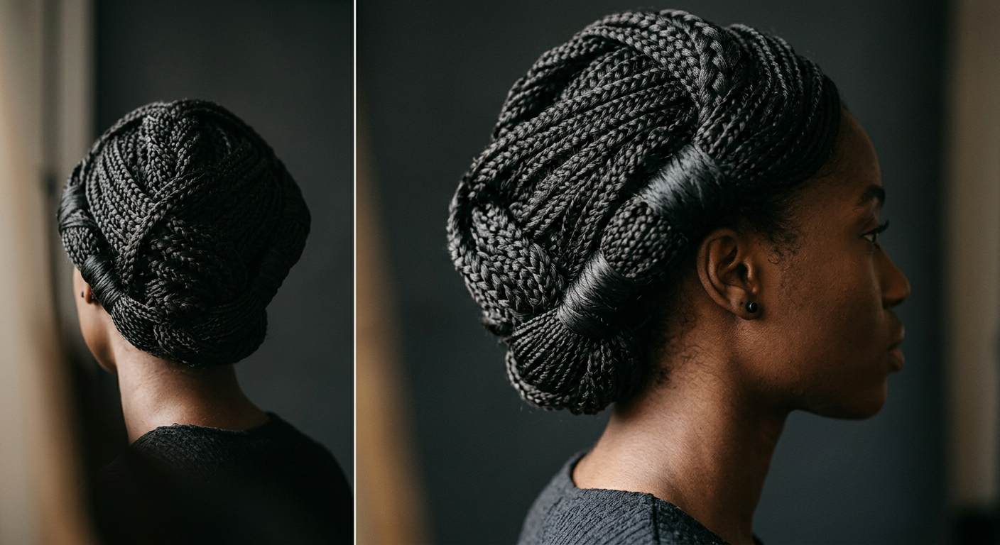
Silhouette
Studies
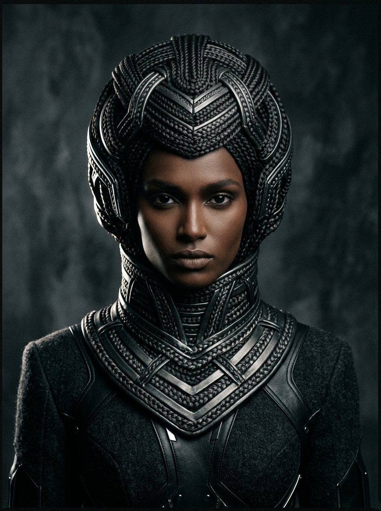
Mutation
Archive
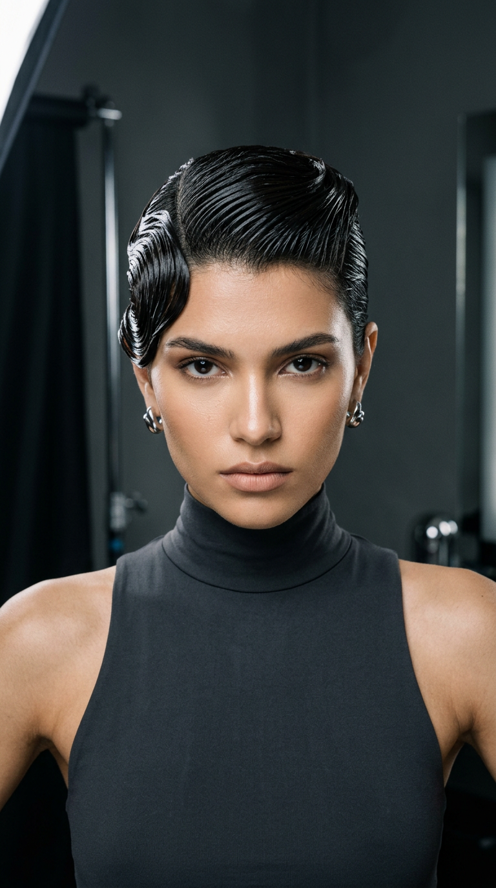
"This is someone who can re-author a human image from the silhouette outward."
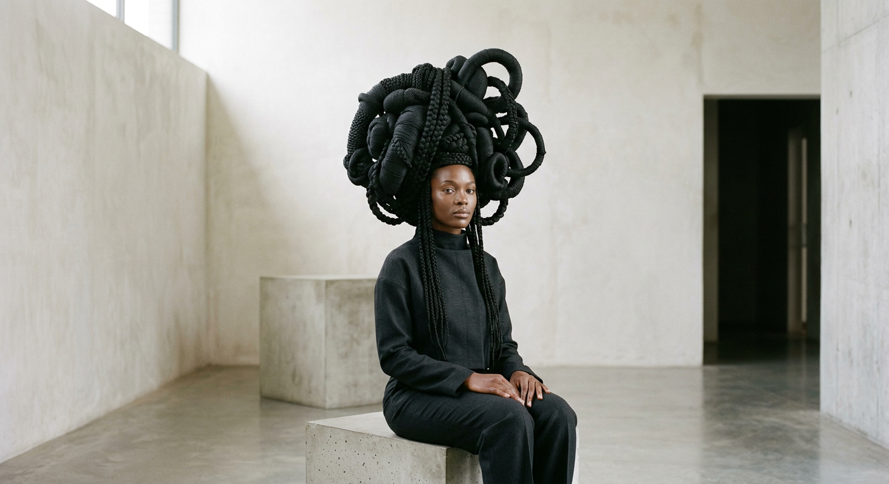
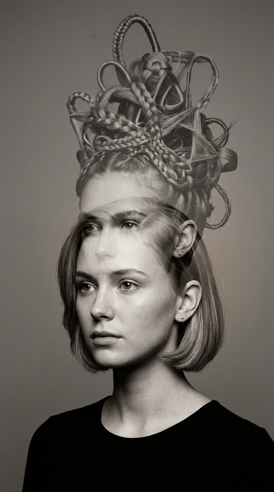
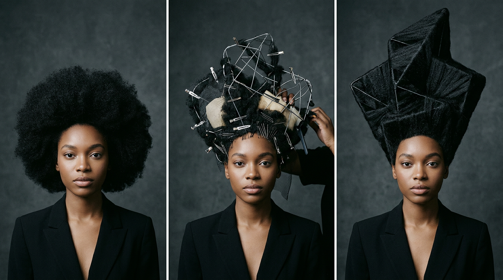
Construction
Dossier
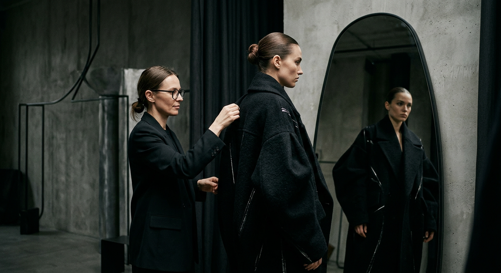
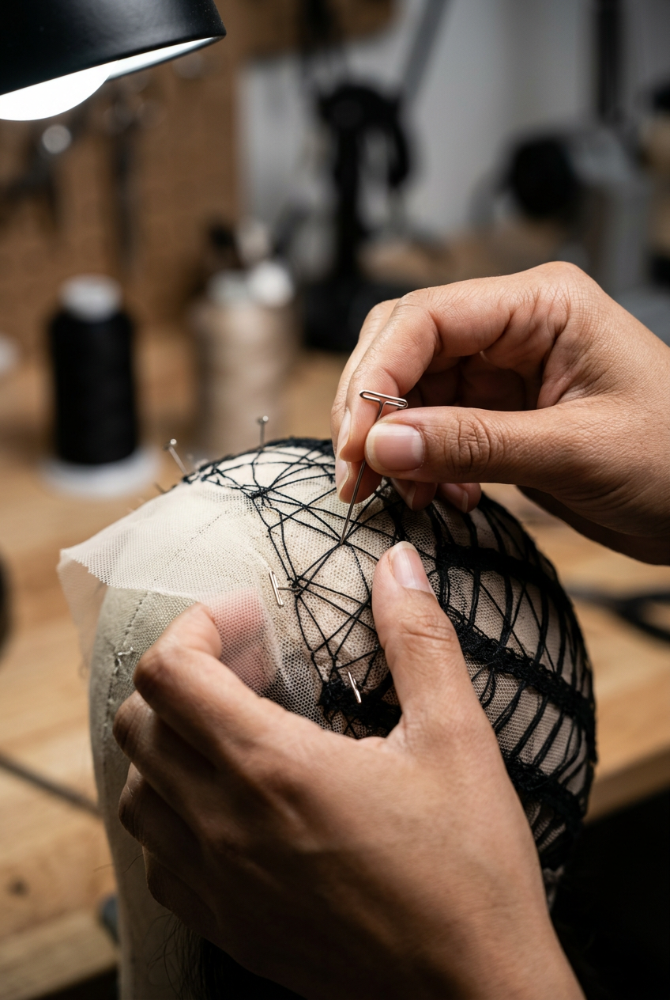
Identity
Split
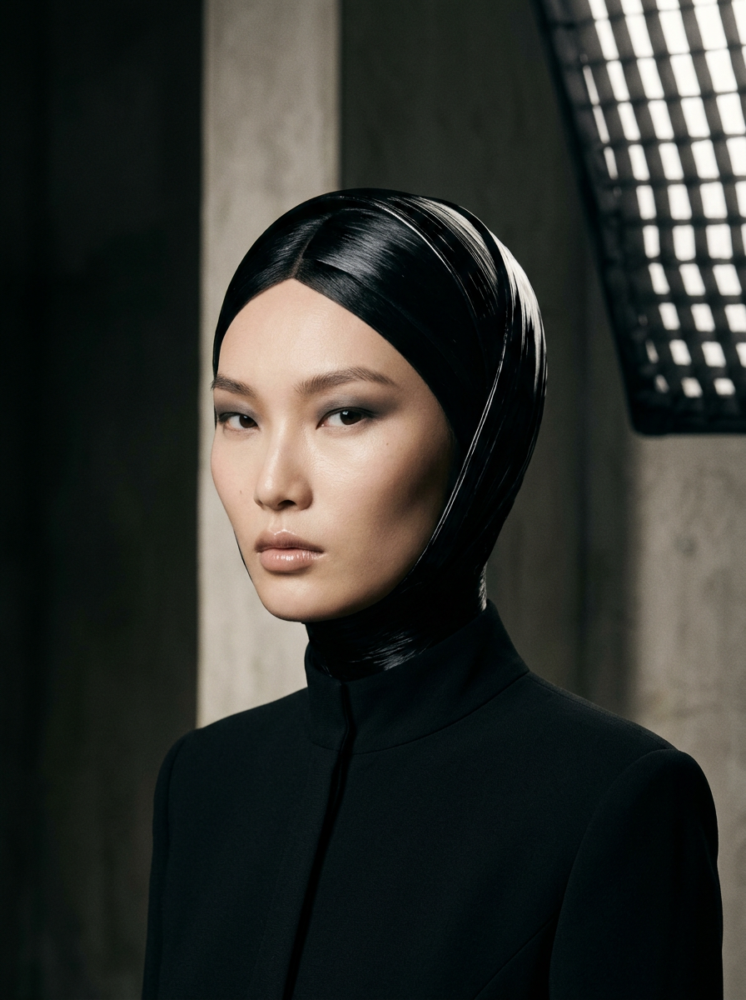
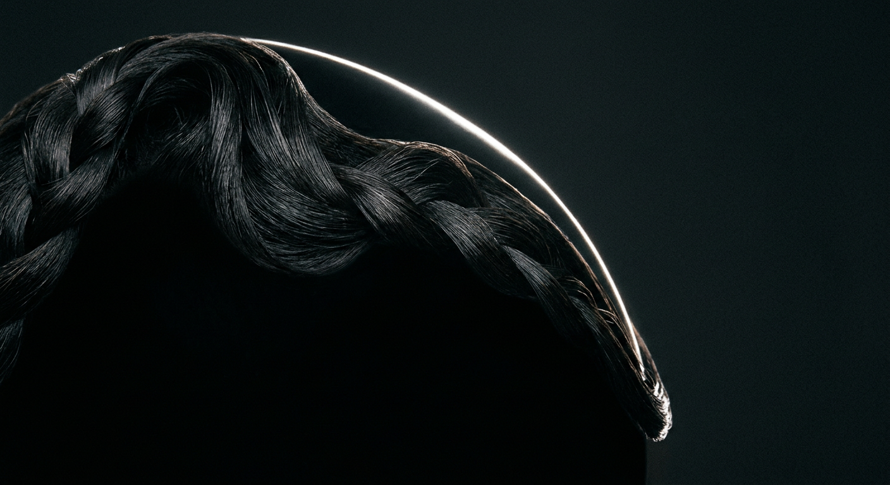
Atmosphere
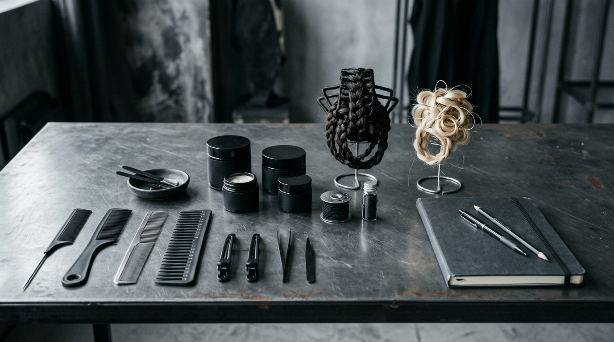
Staging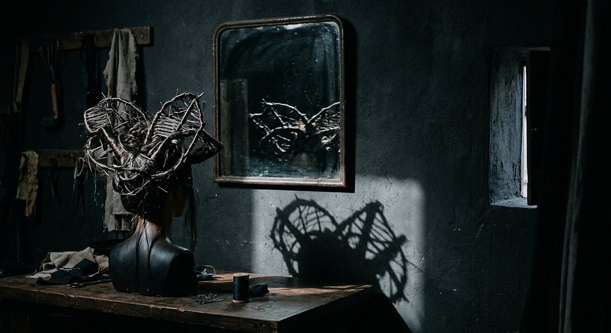
Instruments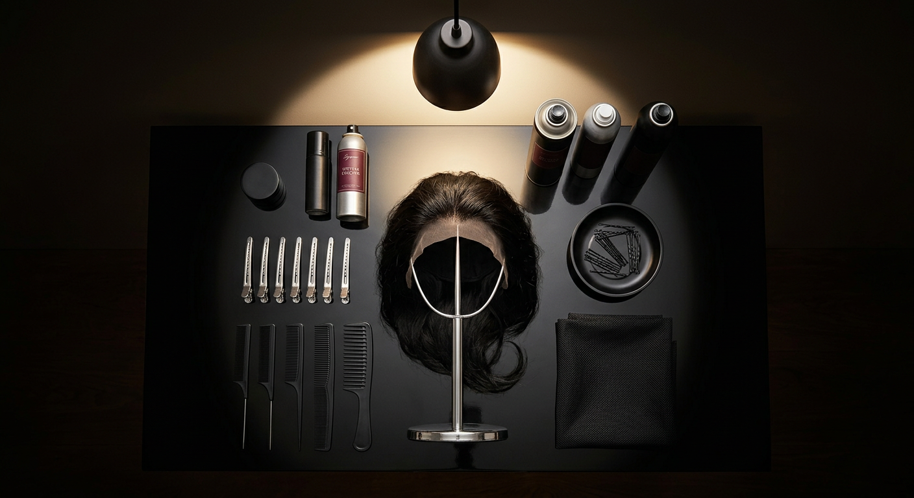
Altar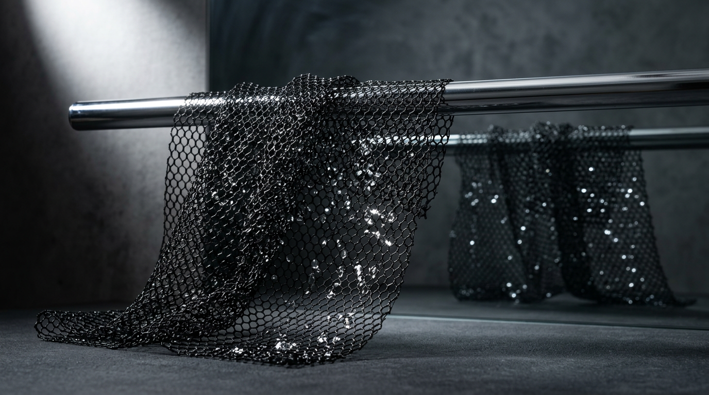
Material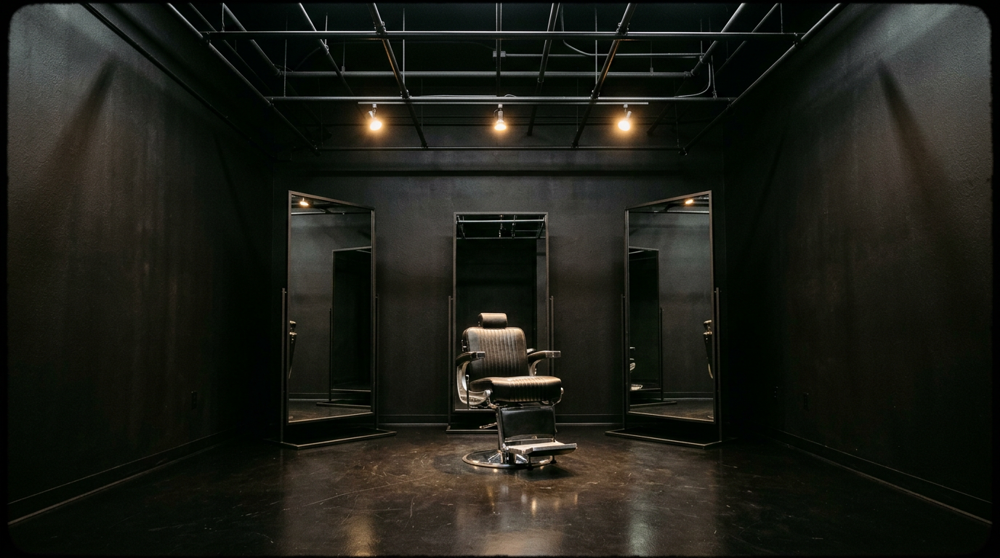
The ChamberBegin Your
Transformation
This work is by consultation only. Each transformation is a collaboration — a conversation about who you are and who you could become.
Book a Consultation